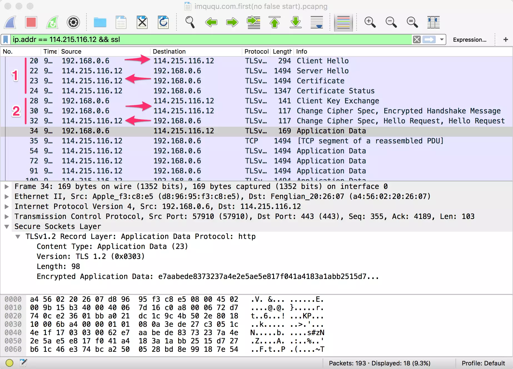
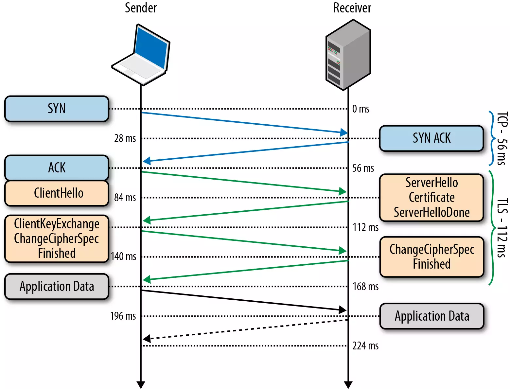

[TOC]
TLS 笔记
TLS是传输层安全性协议(Transport Layer Security)
SSL是socket层安全协议(Secure Sockets Layer)
TLS协议的优势是与高层的应用层协议（如HTTP、FTP、Telnet等）无耦合。应用层协议能透明地运行在TLS协议之上，由TLS协议进行创建加密通道需要的协商和认证。应用层协议传送的数据在通过TLS协议时都会被加密，从而保证通信的私密性。
TLS 握手
抓包

握手过程

- 完成 TCP 的三次握手
- server 认证
- client 发出请求 client hello
- server返回 Server hello 以及 pub key
- 证书校验, 判断证书是否有效, 与浏览器内置的信任的根证书比对, 若是这些根证书机构或者其二级机构颁发的, 则有效.
- 协商会话密钥
- 用 server_pub_key 加密 client_pub_key与 Client_session_key 发送给server
- server 用自己的 server_pri_key 解密, 得到 client_pub_key, 用该 key 加密 server_session_key 发送给 client
- client收到 server_session_key
- 之后切换为对称加密, 使用session key 进行加密并发送加密后的数据.
优化
- false start 抢跑, 在客户端发送自己的session key 的时候可以携带加密后的数据一起发送.
- session key信息保存, 在下次握手时可以节省协商 session key 的过程